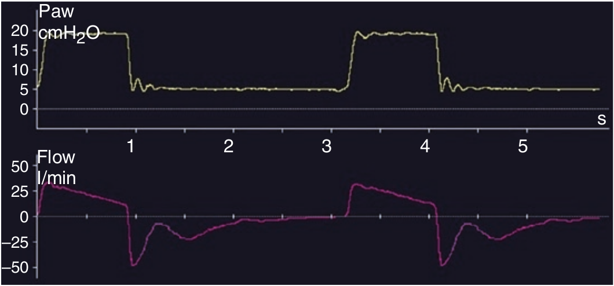

در صورت عدم ثبات تراشه یا وجود تراکئومالاسی، در هنگام بازدم غیرفعال این عدم ثبات قابل تشخیص است. شدت جریان بازدمی با روی هم خوابیدن تراشه دچار محدودیت میشود.

تراکئومالاسی مشخص میوشد توسط؟
۱ - عدم ثبات شدت جریان دمی
۲ - عدم ثبات شدت جریان بازدمی
۳ - ثابت زمانی کوتاه بازدمی
۴ - ثابت زمانی بلند بازدمی
۵ - عدم ثبات منحنی فشار بازدمی